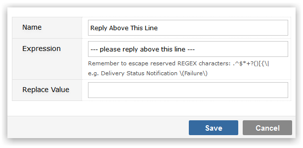
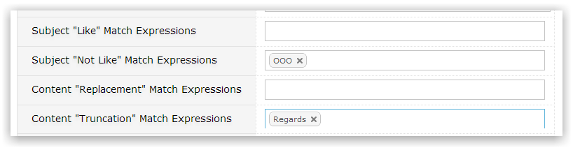

Match expressions are regular expressions that can be used to identify specific strings of characters. You can use match expressions to find things in email subject lines email body.
You can provide a match expression and replacement value.

As an example you could have an expression of "out of office".
You then use match expressions different mailboxes.

Only emails matching these subject line expressions will be processed. This is a great way to only process emails with a particualr subject line (e.g. "Sales Order")
Only emails that do not match these subject line expressions will be processed. This is a great way to ignore emails with a particular subject line (e.g. Out Of Office).
The email body will be searched for matching expressions and any matched content will be replaced by the value specified.
The email body will be searched for matching expressions and any matched content will be removed from that point onwards. This is a great way to strip out email signatures.